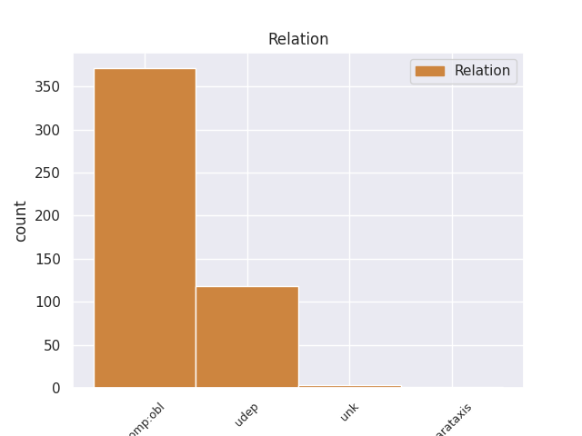
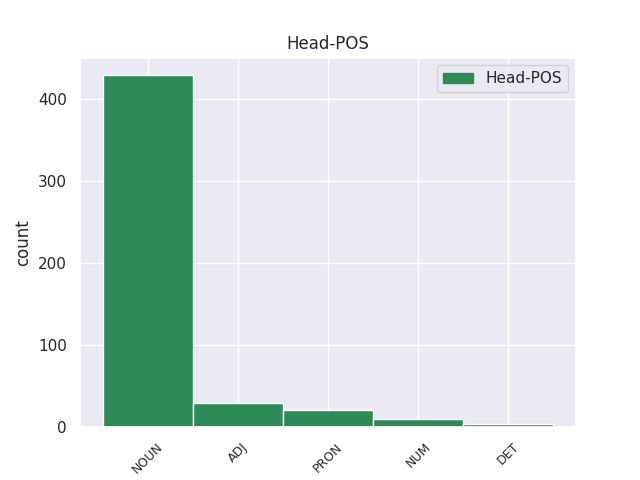
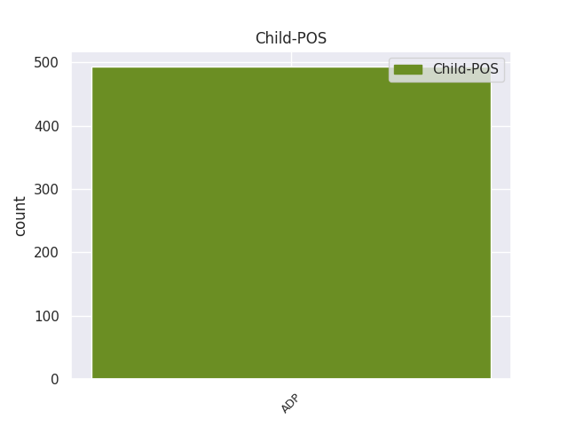

Distribution of features within this leaf



Agreement Rules sorted by frequency.
- When the dependent token is the oblique complements(comp:obl) of the head token, and the head token is NOUN and the dependent token is ADP.
1 6.4 _ _ _ _ 0 _ _ _
2 . _ _ _ _ 0 _ _ _
3 stokojant _ _ _ _ 0 _ _ _
4 lėšų _ _ _ _ 0 _ _ _
5 valstybės _ _ _ _ 0 _ _ _
6 paramai _ _ _ _ 0 _ _ _
7 teikti _ _ _ _ 0 _ _ _
8 , _ _ _ _ 0 _ _ _
9 derina _ _ _ _ 0 _ _ _
10 Programą _ _ _ _ 0 _ _ _
11 įgyvendinančios _ _ _ _ 0 _ _ _
12 agentūros _ _ _ _ 0 _ _ _
13 sudarytą _ _ _ _ 0 _ _ _
14 pretendentų _ _ _ _ 0 _ _ _
15 valstybės _ _ _ _ 0 _ _ _
16 paramai _ _ _ _ 0 _ _ _
17 gauti _ _ _ _ 0 _ _ _
18 sąrašą _ _ _ _ 0 _ _ _
19 , _ _ _ _ 0 _ _ _
20 kuris _ _ _ _ 0 _ _ _
21 parengiamas _ _ _ _ 0 _ _ _
22 vadovaujantis _ _ _ _ 0 _ _ _
23 Lietuvos _ _ _ _ 0 _ _ _
24 Respublikos _ _ _ _ 0 _ _ _
25 Vyriausybės _ _ _ _ 0 _ _ _
26 2004 _ _ _ _ 0 _ _ _
27 m _ _ _ _ 0 _ _ _
28 . _ _ _ _ 0 _ _ _
29 rugsėjo _ _ _ _ 0 _ _ _
30 23 _ _ _ _ 0 _ _ _
31 d _ _ _ _ 0 _ _ _
32 . _ _ _ _ 0 _ _ _
33 nutarimo nutarimas NOUN dkt.vyr.vns.K. Case=Gen|Gender=Masc|Number=Sing 0 _ _ _
34 Nr _ _ _ _ 0 _ _ _
35 . _ _ _ _ 0 _ _ _
36 1213 _ _ _ _ 0 _ _ _
37 „ _ _ _ _ 0 _ _ _
38 Dėl dėl ADP prl.K. AdpType=Prep|Case=Gen 33 comp:obl _ _
39 daugiabučių _ _ _ _ 0 _ _ _
40 namų _ _ _ _ 0 _ _ _
41 modernizavimo _ _ _ _ 0 _ _ _
42 programos _ _ _ _ 0 _ _ _
43 “ _ _ _ _ 0 _ _ _
44 3 _ _ _ _ 0 _ _ _
45 punkte _ _ _ _ 0 _ _ _
46 nurodytais _ _ _ _ 0 _ _ _
47 kriterijais _ _ _ _ 0 _ _ _
48 ; _ _ _ _ 0 _ _ _
1 23 _ _ _ _ 0 _ _ _
2 . _ _ _ _ 0 _ _ _
3 Kalendoriniams _ _ _ _ 0 _ _ _
4 metams _ _ _ _ 0 _ _ _
5 pasibaigus _ _ _ _ 0 _ _ _
6 , _ _ _ _ 0 _ _ _
7 Komiteto _ _ _ _ 0 _ _ _
8 sekretorius _ _ _ _ 0 _ _ _
9 turimus _ _ _ _ 0 _ _ _
10 dokumentus _ _ _ _ 0 _ _ _
11 , _ _ _ _ 0 _ _ _
12 susijusius _ _ _ _ 0 _ _ _
13 su _ _ _ _ 0 _ _ _
14 Komiteto _ _ _ _ 0 _ _ _
15 posėdžiais _ _ _ _ 0 _ _ _
16 , _ _ _ _ 0 _ _ _
17 perduoda _ _ _ _ 0 _ _ _
18 saugoti _ _ _ _ 0 _ _ _
19 Aplinkos _ _ _ _ 0 _ _ _
20 ministerijai _ _ _ _ 0 _ _ _
21 , _ _ _ _ 0 _ _ _
22 kur _ _ _ _ 0 _ _ _
23 jie _ _ _ _ 0 _ _ _
24 saugomi _ _ _ _ 0 _ _ _
25 5 _ _ _ _ 0 _ _ _
26 metus _ _ _ _ 0 _ _ _
27 , _ _ _ _ 0 _ _ _
28 vadovaujantis _ _ _ _ 0 _ _ _
29 Lietuvos _ _ _ _ 0 _ _ _
30 archyvų _ _ _ _ 0 _ _ _
31 departamento departamentas NOUN dkt.vyr.vns.K. Case=Gen|Gender=Masc|Number=Sing 0 _ _ _
32 prie prie ADP prl.K. AdpType=Prep|Case=Gen 31 udep _ _
33 Lietuvos _ _ _ _ 0 _ _ _
34 Respublikos _ _ _ _ 0 _ _ _
35 Vyriausybės _ _ _ _ 0 _ _ _
36 1997 _ _ _ _ 0 _ _ _
37 m _ _ _ _ 0 _ _ _
38 . _ _ _ _ 0 _ _ _
39 rugpjūčio _ _ _ _ 0 _ _ _
40 15 _ _ _ _ 0 _ _ _
41 d _ _ _ _ 0 _ _ _
42 . _ _ _ _ 0 _ _ _
43 įsakymu _ _ _ _ 0 _ _ _
44 Nr _ _ _ _ 0 _ _ _
45 . _ _ _ _ 0 _ _ _
46 38 _ _ _ _ 0 _ _ _
47 „ _ _ _ _ 0 _ _ _
48 Dėl _ _ _ _ 0 _ _ _
49 bendrųjų _ _ _ _ 0 _ _ _
50 dokumentų _ _ _ _ 0 _ _ _
51 saugojimo _ _ _ _ 0 _ _ _
52 terminų _ _ _ _ 0 _ _ _
53 “ _ _ _ _ 0 _ _ _
54 ( _ _ _ _ 0 _ _ _
55 Žin _ _ _ _ 0 _ _ _
56 . _ _ _ _ 0 _ _ _
57 , _ _ _ _ 0 _ _ _
58 1997 _ _ _ _ 0 _ _ _
59 , _ _ _ _ 0 _ _ _
60 Nr _ _ _ _ 0 _ _ _
61 . _ _ _ _ 0 _ _ _
62 78-006 _ _ _ _ 0 _ _ _
63 ) _ _ _ _ 0 _ _ _
64 . _ _ _ _ 0 _ _ _
1 Dabartinė _ _ _ _ 0 _ _ _
2 Kultūros _ _ _ _ 0 _ _ _
3 ministerijos _ _ _ _ 0 _ _ _
4 struktūra _ _ _ _ 0 _ _ _
5 trukdo _ _ _ _ 0 _ _ _
6 įvertinti _ _ _ _ 0 _ _ _
7 įvairių _ _ _ _ 0 _ _ _
8 kuruojamų _ _ _ _ 0 _ _ _
9 sričių _ _ _ _ 0 _ _ _
10 specifiką _ _ _ _ 0 _ _ _
11 , _ _ _ _ 0 _ _ _
12 ypač _ _ _ _ 0 _ _ _
13 kai kai PRON sampl.įv.mot.dgs.K. Case=Gen|Definite=Ind|Gender=Fem|Hyph=Yes|Number=Plur|PronType=Ind 0 _ _ _
14 kurių _ _ _ _ 0 _ _ _
15 iš iš ADP prl.K. AdpType=Prep|Case=Gen 13 comp:obl _ _
16 jų _ _ _ _ 0 _ _ _
17 tarpdisciplininį _ _ _ _ 0 _ _ _
18 pobūdį _ _ _ _ 0 _ _ _
19 , _ _ _ _ 0 _ _ _
20 savitą _ _ _ _ 0 _ _ _
21 santykį _ _ _ _ 0 _ _ _
22 su _ _ _ _ 0 _ _ _
23 visuomene _ _ _ _ 0 _ _ _
24 ir _ _ _ _ 0 _ _ _
25 kitomis _ _ _ _ 0 _ _ _
26 valstybės _ _ _ _ 0 _ _ _
27 politikos _ _ _ _ 0 _ _ _
28 sritimis _ _ _ _ 0 _ _ _
29 . _ _ _ _ 0 _ _ _
1 9 _ _ _ _ 0 _ _ _
2 . _ _ _ _ 0 _ _ _
3 Smulkiojo _ _ _ _ 0 _ _ _
4 ir _ _ _ _ 0 _ _ _
5 vidutinio _ _ _ _ 0 _ _ _
6 verslo _ _ _ _ 0 _ _ _
7 plėtros _ _ _ _ 0 _ _ _
8 programa _ _ _ _ 0 _ _ _
9 – _ _ _ _ 0 _ _ _
10 programa _ _ _ _ 0 _ _ _
11 , _ _ _ _ 0 _ _ _
12 kurioje _ _ _ _ 0 _ _ _
13 bent _ _ _ _ 0 _ _ _
14 vieno vienas NUM sktv.raid.kiek.vyr.vns.K. Case=Gen|Gender=Masc|Number=Sing|NumForm=Word|NumType=Card 0 _ _ _
15 iš iš ADP prl.K. AdpType=Prep|Case=Gen 14 comp:obl _ _
16 nustatytų _ _ _ _ 0 _ _ _
17 programos _ _ _ _ 0 _ _ _
18 tikslų _ _ _ _ 0 _ _ _
19 ( _ _ _ _ 0 _ _ _
20 uždavinių _ _ _ _ 0 _ _ _
21 , _ _ _ _ 0 _ _ _
22 priemonių _ _ _ _ 0 _ _ _
23 ( _ _ _ _ 0 _ _ _
24 projektų _ _ _ _ 0 _ _ _
25 ) _ _ _ _ 0 _ _ _
26 siektinas _ _ _ _ 0 _ _ _
27 rezultatas _ _ _ _ 0 _ _ _
28 yra _ _ _ _ 0 _ _ _
29 smulkiojo _ _ _ _ 0 _ _ _
30 ir _ _ _ _ 0 _ _ _
31 vidutinio _ _ _ _ 0 _ _ _
32 verslo _ _ _ _ 0 _ _ _
33 plėtra _ _ _ _ 0 _ _ _
34 . _ _ _ _ 0 _ _ _
Disagree Examples:
1 Sąjūdis sąjūdis NOUN dkt.vyr.vns.V. Case=Nom|Gender=Masc|Number=Sing 0 _ _ _
2 : _ _ _ _ 0 _ _ _
3 nuo nuo ADP prl.K. AdpType=Prep|Case=Gen 1 udep _ _
4 „ _ _ _ _ 0 _ _ _
5 Persitvarkymo _ _ _ _ 0 _ _ _
6 “ _ _ _ _ 0 _ _ _
7 iki _ _ _ _ 0 _ _ _
8 Kovo _ _ _ _ 0 _ _ _
9 11-osios _ _ _ _ 0 _ _ _
10 , _ _ _ _ 0 _ _ _
11 t _ _ _ _ 0 _ _ _
12 . _ _ _ _ 0 _ _ _
13 12 _ _ _ _ 0 _ _ _
14 , _ _ _ _ 0 _ _ _
15 d _ _ _ _ 0 _ _ _
16 . _ _ _ _ 0 _ _ _
17 1 _ _ _ _ 0 _ _ _
18 . _ _ _ _ 0 _ _ _
19 Vilnius _ _ _ _ 0 _ _ _
20 : _ _ _ _ 0 _ _ _
21 Baltos _ _ _ _ 0 _ _ _
22 lankos _ _ _ _ 0 _ _ _
23 , _ _ _ _ 0 _ _ _
24 2008 _ _ _ _ 0 _ _ _
25 . _ _ _ _ 0 _ _ _
1 Sąjūdis sąjūdis NOUN dkt.vyr.vns.V. Case=Nom|Gender=Masc|Number=Sing 0 _ _ _
2 : _ _ _ _ 0 _ _ _
3 nuo _ _ _ _ 0 _ _ _
4 „ _ _ _ _ 0 _ _ _
5 Persitvarkymo _ _ _ _ 0 _ _ _
6 “ _ _ _ _ 0 _ _ _
7 iki iki ADP prl.K. AdpType=Prep|Case=Gen 1 udep _ _
8 Kovo _ _ _ _ 0 _ _ _
9 11-osios _ _ _ _ 0 _ _ _
10 , _ _ _ _ 0 _ _ _
11 t _ _ _ _ 0 _ _ _
12 . _ _ _ _ 0 _ _ _
13 12 _ _ _ _ 0 _ _ _
14 , _ _ _ _ 0 _ _ _
15 d _ _ _ _ 0 _ _ _
16 . _ _ _ _ 0 _ _ _
17 1 _ _ _ _ 0 _ _ _
18 . _ _ _ _ 0 _ _ _
19 Vilnius _ _ _ _ 0 _ _ _
20 : _ _ _ _ 0 _ _ _
21 Baltos _ _ _ _ 0 _ _ _
22 lankos _ _ _ _ 0 _ _ _
23 , _ _ _ _ 0 _ _ _
24 2008 _ _ _ _ 0 _ _ _
25 . _ _ _ _ 0 _ _ _
1 Istorijos _ _ _ _ 0 _ _ _
2 autoriai _ _ _ _ 0 _ _ _
3 elgiasi _ _ _ _ 0 _ _ _
4 labai _ _ _ _ 0 _ _ _
5 sąžiningai _ _ _ _ 0 _ _ _
6 , _ _ _ _ 0 _ _ _
7 nes _ _ _ _ 0 _ _ _
8 pratarmėje _ _ _ _ 0 _ _ _
9 deklaruoja _ _ _ _ 0 _ _ _
10 , _ _ _ _ 0 _ _ _
11 kad _ _ _ _ 0 _ _ _
12 istorija _ _ _ _ 0 _ _ _
13 yra _ _ _ _ 0 _ _ _
14 jų _ _ _ _ 0 _ _ _
15 asmeninis _ _ _ _ 0 _ _ _
16 tekstas _ _ _ _ 0 _ _ _
17 , _ _ _ _ 0 _ _ _
18 kuriuo _ _ _ _ 0 _ _ _
19 nepretenduoja _ _ _ _ 0 _ _ _
20 į _ _ _ _ 0 _ _ _
21 tariamą _ _ _ _ 0 _ _ _
22 istorinį _ _ _ _ 0 _ _ _
23 objektyvumą _ _ _ _ 0 _ _ _
24 , _ _ _ _ 0 _ _ _
25 o _ _ _ _ 0 _ _ _
26 siekia _ _ _ _ 0 _ _ _
27 pateikti _ _ _ _ 0 _ _ _
28 vieną vienas NUM sktv.raid.kiek.mot.vns.G. Case=Acc|Gender=Fem|Number=Sing|NumForm=Word|NumType=Card 0 _ _ _
29 iš iš ADP prl.K. AdpType=Prep|Case=Gen 28 comp:obl _ _
30 įvykių _ _ _ _ 0 _ _ _
31 versijų _ _ _ _ 0 _ _ _
32 , _ _ _ _ 0 _ _ _
33 tačiau _ _ _ _ 0 _ _ _
34 baiminuosi _ _ _ _ 0 _ _ _
35 , _ _ _ _ 0 _ _ _
36 jog _ _ _ _ 0 _ _ _
37 nemažai _ _ _ _ 0 _ _ _
38 skaitytojų _ _ _ _ 0 _ _ _
39 nekreips _ _ _ _ 0 _ _ _
40 į _ _ _ _ 0 _ _ _
41 tai _ _ _ _ 0 _ _ _
42 dėmesio _ _ _ _ 0 _ _ _
43 . _ _ _ _ 0 _ _ _
1 Istorijos _ _ _ _ 0 _ _ _
2 autoriai _ _ _ _ 0 _ _ _
3 elgiasi _ _ _ _ 0 _ _ _
4 labai _ _ _ _ 0 _ _ _
5 sąžiningai _ _ _ _ 0 _ _ _
6 , _ _ _ _ 0 _ _ _
7 nes _ _ _ _ 0 _ _ _
8 pratarmėje _ _ _ _ 0 _ _ _
9 deklaruoja _ _ _ _ 0 _ _ _
10 , _ _ _ _ 0 _ _ _
11 kad _ _ _ _ 0 _ _ _
12 istorija _ _ _ _ 0 _ _ _
13 yra _ _ _ _ 0 _ _ _
14 jų _ _ _ _ 0 _ _ _
15 asmeninis _ _ _ _ 0 _ _ _
16 tekstas _ _ _ _ 0 _ _ _
17 , _ _ _ _ 0 _ _ _
18 kuriuo _ _ _ _ 0 _ _ _
19 nepretenduoja _ _ _ _ 0 _ _ _
20 į _ _ _ _ 0 _ _ _
21 tariamą _ _ _ _ 0 _ _ _
22 istorinį _ _ _ _ 0 _ _ _
23 objektyvumą _ _ _ _ 0 _ _ _
24 , _ _ _ _ 0 _ _ _
25 o _ _ _ _ 0 _ _ _
26 siekia _ _ _ _ 0 _ _ _
27 pateikti _ _ _ _ 0 _ _ _
28 vieną _ _ _ _ 0 _ _ _
29 iš _ _ _ _ 0 _ _ _
30 įvykių _ _ _ _ 0 _ _ _
31 versijų _ _ _ _ 0 _ _ _
32 , _ _ _ _ 0 _ _ _
33 tačiau _ _ _ _ 0 _ _ _
34 baiminuosi _ _ _ _ 0 _ _ _
35 , _ _ _ _ 0 _ _ _
36 jog _ _ _ _ 0 _ _ _
37 nemažai _ _ _ _ 0 _ _ _
38 skaitytojų _ _ _ _ 0 _ _ _
39 nekreips _ _ _ _ 0 _ _ _
40 į į ADP prl.G. AdpType=Prep|Case=Acc 42 comp:obl _ _
41 tai _ _ _ _ 0 _ _ _
42 dėmesio dėmesys NOUN dkt.vyr.vns.K. Case=Gen|Gender=Masc|Number=Sing 0 _ _ _
43 . _ _ _ _ 0 _ _ _
1 Gal _ _ _ _ 0 _ _ _
2 dėl _ _ _ _ 0 _ _ _
3 rinkos _ _ _ _ 0 _ _ _
4 konjunktūros _ _ _ _ 0 _ _ _
5 sumetimų _ _ _ _ 0 _ _ _
6 , _ _ _ _ 0 _ _ _
7 o _ _ _ _ 0 _ _ _
8 gal _ _ _ _ 0 _ _ _
9 siekiant _ _ _ _ 0 _ _ _
10 gauti _ _ _ _ 0 _ _ _
11 papildomą _ _ _ _ 0 _ _ _
12 finansavimą _ _ _ _ 0 _ _ _
13 12-ojo _ _ _ _ 0 _ _ _
14 tomo _ _ _ _ 0 _ _ _
15 I _ _ _ _ 0 _ _ _
16 dalies _ _ _ _ 0 _ _ _
17 pavadinimas _ _ _ _ 0 _ _ _
18 siejamas _ _ _ _ 0 _ _ _
19 su _ _ _ _ 0 _ _ _
20 Sąjūdžiu _ _ _ _ 0 _ _ _
21 , _ _ _ _ 0 _ _ _
22 nors _ _ _ _ 0 _ _ _
23 iš _ _ _ _ 0 _ _ _
24 esmės _ _ _ _ 0 _ _ _
25 čia _ _ _ _ 0 _ _ _
26 aprašomas _ _ _ _ 0 _ _ _
27 1987 _ _ _ _ 0 _ _ _
28 - _ _ _ _ 0 _ _ _
29 1990 _ _ _ _ 0 _ _ _
30 metų _ _ _ _ 0 _ _ _
31 LSSR _ _ _ _ 0 _ _ _
32 politinis _ _ _ _ 0 _ _ _
33 gyvenimas _ _ _ _ 0 _ _ _
34 , _ _ _ _ 0 _ _ _
35 kur _ _ _ _ 0 _ _ _
36 Sąjūdis _ _ _ _ 0 _ _ _
37 tik _ _ _ _ 0 _ _ _
38 vienas vienas PRON įv.vyr.vns.V. Case=Nom|Definite=Ind|Gender=Masc|Number=Sing|PronType=Ind 0 _ _ _
39 iš iš ADP prl.K. AdpType=Prep|Case=Gen 38 comp:obl _ _
40 kelių _ _ _ _ 0 _ _ _
41 pagrindinių _ _ _ _ 0 _ _ _
42 veikėjų _ _ _ _ 0 _ _ _
43 . _ _ _ _ 0 _ _ _